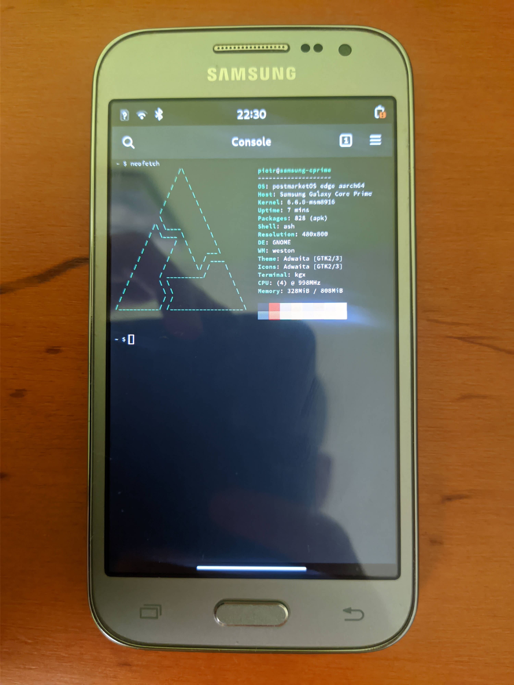

Samsung Galaxy Core Prime LTE (samsung-rossa)
|
 A photo of samsung-cprime running postmarketOS | |
| Manufacturer | Samsung |
|---|---|
| Name | Galaxy Core Prime LTE |
| Codename | samsung-rossa, samsung-cprime |
| Released | 2014 |
| Category | testing |
| Pre-built images | no |
| Original software | Android |
| Original version | 4.4.4 |
| Extended version | 5.1.1 |
| Hardware | |
| Chipset | Qualcomm Snapdragon 410 (MSM8916) |
| CPU | Quad-core 1.2 GHz Cortex-A53 |
| GPU | Adreno 306 |
| Display | 480x800 |
| Storage | 5.25 GB |
| Memory | 880 MB |
| Architecture | AArch64 |
| Type | handset |
| Unixbench Whet/Dhry score | 909.3 |
{kind=link}
| USB Networking |
Works
|
|---|---|
| Flashing |
Works
|
| Touchscreen |
Works
|
| Display |
Works
|
| WiFi |
Works
|
| FDE |
Works
|
| Mainline |
Works
|
| Battery |
Works
|
| 3D Acceleration |
Works
|
| Audio |
Works
|
| Bluetooth |
Works
|
| Camera |
Broken
|
| GPS | |
| Mobile data |
Works
|
| Internal storage | |
| SMS |
Works
|
| Calls |
Works
|
| USB OTG |
Works
|
| NFC |
Works
|
| Accelerometer |
Partial
|
|---|---|
| Proximity |
Broken
|
| Barometer | |
| Power Sensor | |
| Built-in DVB | |
|---|---|
| Camera Flash | |
| Keyboard | |
| Touchpad | |
| USB-A | |
| HDMI/DP | |
| Ir TX | |
| Ir RX | |
| Stylus | |
| Memory Card | |
| Haptics | |
| Ethernet | |
| FOSS bootloader | |
| Note: This page is about Qualcomm MSM8916 variants of Core Prime LTE. For other variants, see Samsung Galaxy Core Prime. |
Contributors
Users owning this device
- Chipmunk (Notes: I own two; both are the Verizon Wireless variant, have locked bootloaders, and run stock; one has Reactivation lock active, although I have managed to enable USB Debugging on it)
- PiotrZPL (Notes: 2 x G360F's, one running postmarketOS Edge, another rooted Android 5.0.2.)
- WonderfulShrineMaidenOfParadise
Architecture
| Note: Even though MSM8916 is capable of aarch64, the firmware of some variants were never updated with aarch64 support. Therefore, this device can only boot mainline on aarch64 at the moment. |
Installation
lk2nd is a secondary bootloader that provides a standard fastboot interface, which can be used to boot postmarketOS without Android boot flashed or pmbootstrap flasher flash_kernel.
- Download lk2nd-msm8916.img from Releases page on Github.
- Boot your phone to bootloader (Odin/Download) mode by holding Volume Down and Home while powering up.
- Follow lk2nd instructions to install lk2nd. Basically flash it to the boot partition (
heimdall flash --BOOT lk2nd-msm8916.img - Follow Qualcomm_Snapdragon_410/412_(MSM8916)#Installation to install postmarketOS.
| Note: Enter lk2nd fastboot mode by pressing only Volume Down + Power (without Home). Pressing Home additionally will bring you to the Samsung Download mode. |
Panel
There are 2 panel variants, and lk2nd is required to enable the panel[1][2].
|
This device is based on the Snapdragon 410. See the SoC page for common tips, guides and troubleshooting steps |
Flash LED
Currently WIP. It can be controlled with SG Micro SGM3140 charge pump LED driver[3].
GPS
No idea how to test yet.
Proximity Sensor
No interrupts received from gp2ap002s00f sensor.
Accelerometer
lis2hh12 accelerometer is not so stable for auto screen rotation, which suggests you to use fixed portrait or landscape mode.
Touchkey
Touchkey type is unknown, so there is nothing done for it.
TWRP
- Install
Heimdall - Download TWRP
- Enable USB debugging in the system preferences
- Press Power + Vol down + Home to go into download mode
heimdall flash --RECOVERY twrp-file.img --no-reboot
See also
- Samsung Galaxy Grand Prime (samsung-fortuna)
- Samsung Galaxy Ace 4 (samsung-heatqlte)
- Device package
- Firmware package